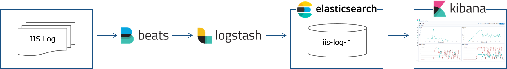

Elastic Stack 構築
目次
各ソフトウェア概要

- Elastic Stack は Elasticsearch，Kibana，Beats，Logstash からなるプロダクト群のことを指す。
- Beats はデータシッパーと呼ばれ，データ転送ツールとして用いられる。
- 自動でファイルの更新を検知し差分を転送してくれる。
- 今回は Filebeats を使用する。
- Logstash はデータ処パイプラインと呼ばれ，データを取り込み，変換し Elasticsearch に格納することが出来る。
- Elasticsearch は言わずと知れた全文検索エンジン。データ投入時に転置インデックスを作成することで大量のドキュメントを高速に検索出来るようにしている。
- Kibana は Elasticsearch のデータを可視化するツールとして用いられる。
処理フロー
- 処理フローは [Filebeat -> Logstash -> Elasticsearch -> Kibana]
- Filebeat で IIS ログを監視し，更新を検知したら Logstash に転送する。
- Logstash で tsv を json に変換し，Elasticsearch に投入する。
- Kibana で Elasticsearch のデータを可視化する。
Docker Compose で Elastic Stack を構築する
Docker Compose で構築する。 docker-compose.yml があるディレクトリで docker-compose up -d でコンテナを起動する。
> docker-compose up -d
構成
- ./filebeat/log に IIS ログを格納する。
- コンテナが起動していれば自動で Elasticsearch に投入される。
- ./filebeat/indexed に取り込んだ IIS ログを格納する。
- コンテナを再起動すると重複して取り込まれるため。
.
├─docker-compose.yml
├─.env
├─elasticsearch
│ └─data
├─filebeat
│ ├─conf
│ │ └─filebeat.yml
│ └─log
│ └─u_exyyyymmdd.log
│ └─indexed
│ └─u_exyyyymmdd.log
└─logstash
└─pipeline
└─logstash.conf
docker-compose.yml
- Elasticsearch，Kibana，Logstash，Filebeat を構築する。
- Elasticsearch はシングルノードで構築する。
- Elasticsearch のデータを保持できるようボリュームをローカルにマウントする。
- Kibana で作成したグラフやダッシュボードもここに格納される。
- Logstash ではローカルの設定ファイルを読み込む。
- Filebeat ではローカルの設定ファイルを読みこむ。
- Filebeat でローカルのログを参照できるようにボリュームをマウントする。
- Filebeat で Docker のソケットを参照するらしいのでマウントする。
version: "3"
services:
elasticsearch:
image: docker.elastic.co/elasticsearch/elasticsearch:7.2.0
environment:
- discovery.type=single-node
- cluster.name=docker-cluster
- bootstrap.memory_lock=true
- "ES_JAVA_OPTS=-Xms4096m -Xmx4096m"
ulimits:
memlock:
soft: -1
hard: -1
ports:
- 9200:9200
volumes:
- ./elasticsearch/data:/usr/share/elasticsearch/data
kibana:
image: docker.elastic.co/kibana/kibana:7.2.0
ports:
- 5601:5601
logstash:
image: docker.elastic.co/logstash/logstash:7.2.0
ports:
- 5044:5044
environment:
- "LS_JAVA_OPTS=-Xms4096m -Xmx4096m"
volumes:
- ./logstash/pipeline:/usr/share/logstash/pipeline
filebeat:
image: docker.elastic.co/beats/filebeat:7.2.0
volumes:
- ./filebeat/conf/filebeat.yml:/usr/share/filebeat/filebeat.yml
- ./filebeat/log:/usr/share/filebeat/log
- /var/run/docker.sock:/var/run/docker.sock
user: root
.env
Docker for Windows で /var/run/docker.sock をマウント出来るようにする。
COMPOSE_CONVERT_WINDOWS_PATHS=1
logstash.conf
- Filebeat からの転送を受け付けるように input を設定する。
- IIS ログを加工する。
- Elasticsearch に投入出来るよう output を設定する。
input {
# input from Filebeat
beats {
port => 5044
}
}
filter {
dissect {
# log format is TSV
mapping => {
"message" => "%{ts} %{+ts} %{s-ip} %{cs-method} %{cs-uri-stem} %{cs-uri-query} %{s-port} %{cs-username} %{c-ip} %{cs(User-Agent)} %{cs(Referer)} %{sc-status} %{sc-substatus} %{sc-win32-status} %{time-taken}"
}
}
date {
match => ["ts", "YYYY-MM-dd HH:mm:ss"]
timezone => "UTC"
}
ruby {
code => "event.set('[@metadata][local_time]',event.get('[@timestamp]').time.localtime.strftime('%Y-%m-%d'))"
}
mutate {
convert => {
"sc-bytes" => "integer"
"cs-bytes" => "integer"
"time-taken" => "integer"
}
remove_field => "message"
}
}
output {
elasticsearch {
hosts => [ 'elasticsearch' ]
index => "iislog-%{[@metadata][local_time]}"
}
}
filebeat.yml
- /usr/share/filebeat/log を参照するように input を設定する。
- 実際は ./filebeat/log を /usr/share/filebeat/log にマウントしているので ./filebeat/log に IIS ログを格納すれば Filebeat が自動で参照する。
- Logstash に転送するよう output を設定する。
filebeat.inputs:
- type: log
enabled: true
paths:
- /usr/share/filebeat/log/*.log
exclude_lines: ['^#','HealthChecker']
output.logstash:
hosts: ["logstash:5044"]
IIS ログファイルを置く
IIS ログファイルを ./filebeat/log に置くと Filebeat がそれを検知し Logstash に送信する。
送信されたデータは Logstash で加工され，Elasticsearch に投入される。
取り込まれたら IIS ログファイルを ./filebeat/indexed に退避する。
Kibana で可視化する
Elasticsearch の Index 確認
http://localhost:5601 にアクセスする。

歯車アイコンをクリックし，Elasticsearch/Index Management をクリックする。
IIS ログの Index が作成されていることを確認する。
Kibana の Index Pattern 作成
Kibana/Index Patterns をクリックし，Create Index pattern をクリックする。
Index pattern を入力し Next step をクリックする。
Time Filter field name で @timestamp を選択し Create index pattern をクリックする。
ここで作成した Index pattern を選択しグラフを作成していく。
グラフ作成
先ほど作成した Index pattern を指定する。

右上の表示期間を絞り込む。

X 軸を指定する。
Aggregation を Date Histogram，Field を @timestamp，Minimum interval を Minute とし，▷をクリックする。

これで分間のリクエスト数がグラフに表示された。
機能ごとの分間リクエスト数を表示するには Add filter をクリックし，Field（フィルターをかけたい項目），Operator（演算子），Value（値） を指定する。


ダッシュボード作成
作成したグラフをダッシュボードに並べることが出来る。